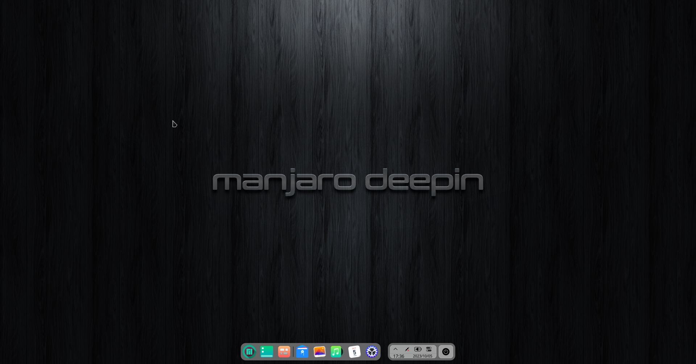
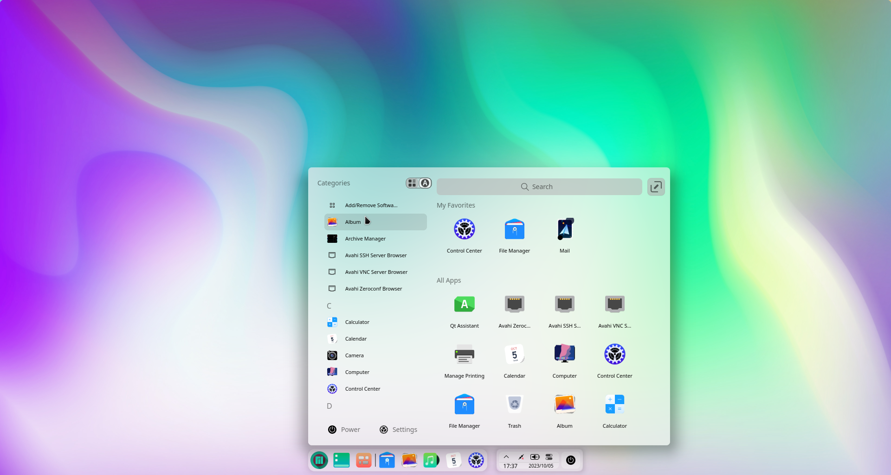
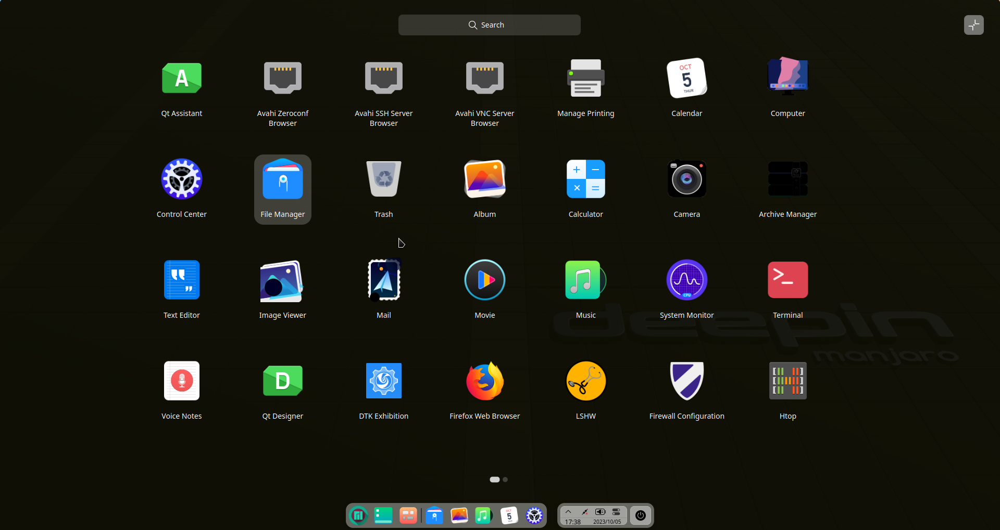

|
|
 Manjaro Deepin was a community edition of Manjaro Linux that provided an out-of-the-box Deepin Desktop experience powered by all the goodies that the Arch Linux and Manjaro Linux distributions have to offer.It is easy to install with Calamares installer which has a Graphic and user-friendly interface.   |